1. 这一部分加了什么
| 接口 | 做什么 | 写到哪 |
|---|---|---|
POST /inbound-orders/{orderId}/attachments | 表单上传一个文件，字段名 file | 内容写进磁盘或 MinIO；inbound_attachment 插入一行 |
GET /inbound-orders/{orderId}/attachments/{attachmentId} | 下载这个附件，浏览器保存时用原来的文件名 | 只读 |
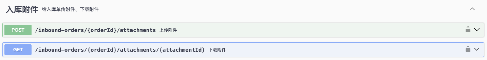
http://localhost:8080/swagger-ui.html，「入库附件」分组下就是这两个接口。上传接口在 Swagger 里会出现一个「选择文件」按钮。和前几部分相比，多出来的一站是「内容放在哪」：
取路径和表单里的 file
起名字、选放在哪
放内容
记下放在哪
数据库只适合存短的字符串和数字。几 MB 的照片放进表里，备份、查询都会变慢，所以表里只记「去哪找」，内容交给专门存文件的地方。
2. 把 MinIO 跑起来
MinIO 是对象存储：按「桶 + key」放一段字节，和阿里云 OSS、亚马逊 S3 用同一套接口。课堂上用 Compose 起一个：
docker compose -f docker-compose.dev.yml up -d minio
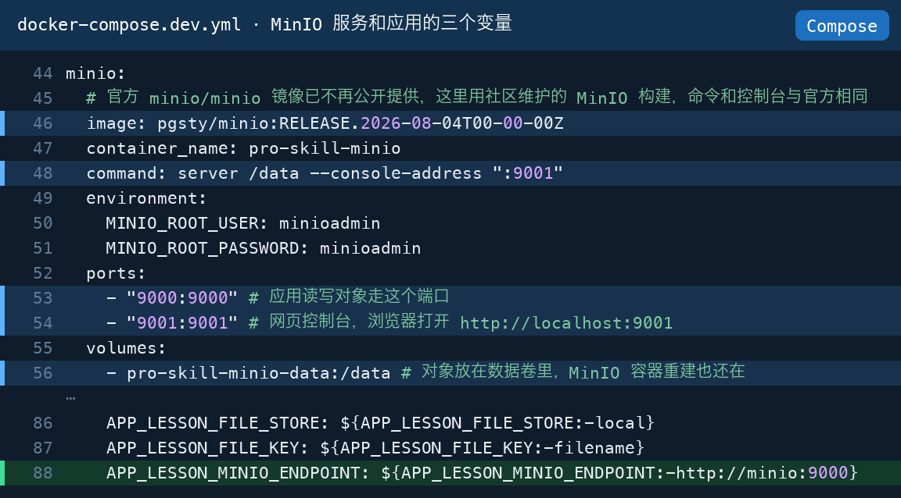
minio/minio 镜像已经不再公开提供，这里用社区维护的 MinIO 构建，命令和接口与官方相同。第 48 行启动服务端，数据放在容器里的 /data。第 50–51 行是登录用的账号和密码。第 53 行 9000 端口给程序读写，第 54 行 9001 端口是网页控制台。第 56 行把 /data 放进数据卷 pro-skill-minio-data，MinIO 容器重建，对象还在。第 86–88 行是应用容器的三个变量，第 4 节讲。浏览器打开 http://localhost:9001，用 minioadmin / minioadmin 登录。控制台标题显示 SILO，这是这个社区构建的名字。左边 Object Browser 里能看到桶和桶里的对象。第一次上传时程序会自己建桶 wms。
和 Redis 一样，应用在本机跑时连 http://localhost:9000（yaml 里的 minio-endpoint），在 Compose 里跑时连服务名 http://minio:9000（第 88 行）。
这一部分要把应用放进容器里跑
漏洞一只有在应用跑在容器里时才看得出来。第一部分已经讲过应用容器，这里直接用：
docker compose -f docker-compose.dev.yml up -d --build minio app
应用容器占用本机 8080 端口。IDE 里如果还开着 ProSkillApplication，先停掉它。
3. 一张新表
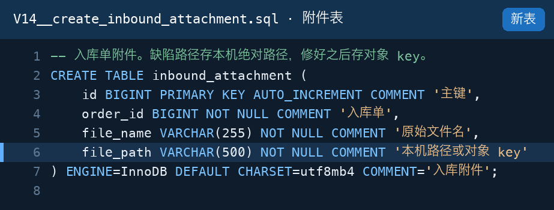
order_id 是入库单主键。file_name 是页面上传时的原名，下载时还给浏览器。第 6 行 file_path 是「去哪找内容」：漏洞那一侧存本机绝对路径，修好那一侧存对象 key。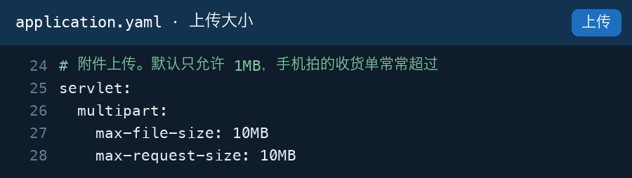
4. 开关怎样起作用
file-store: local
@Value 读成 boolean
if (switches.fileOnMinio())
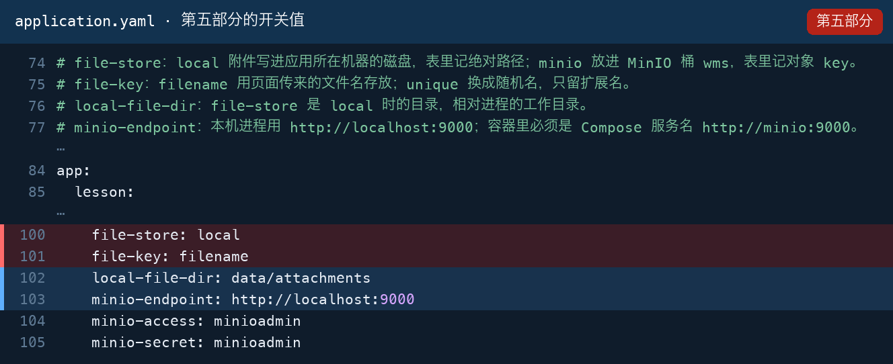
file-store: local 写本机磁盘，file-key: filename 用原名存放。第 102 行是本机磁盘的目录，第 103 行是本机进程连 MinIO 的地址。前几部分的开关都已经是改良版合并过来的值。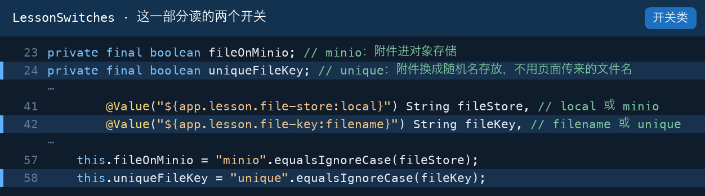
file-key，第 58 行写成 unique 时 uniqueFileKey() 才是 true。file-store 在第 23、41、57 行，写成 minio 时 fileOnMinio() 是 true。这一部分的实验在容器里跑，起作用的是 Compose 里的值（第 2 节图里第 86–87 行），改完执行 docker compose -f docker-compose.dev.yml up -d app 让应用容器带着新值重建。也可以临时盖过：APP_LESSON_FILE_STORE=minio APP_LESSON_FILE_KEY=unique docker compose -f docker-compose.dev.yml up -d app。
改良版上的值
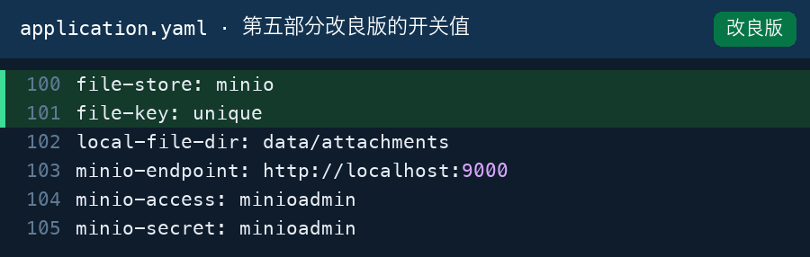
application.yaml，第 100–101 行是 minio 和 unique。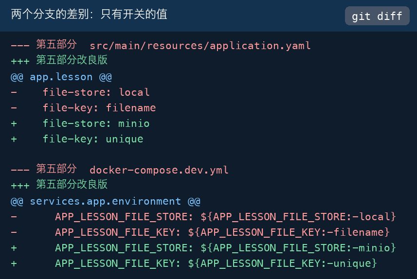
5. 接口一：上传附件
POST /inbound-orders/1/attachments，请求体不是 JSON，是表单（multipart/form-data），里面一个字段 file。先准备一个文件再上传：
echo '第一张收货单：SKU-001 到货 10 件' > note1.txt curl -X POST http://localhost:8080/inbound-orders/1/attachments \ -H "Authorization: Bearer 你的token" \ -F "file=@note1.txt;filename=note.txt"
-F 就是表单字段。@note1.txt 是本机文件，filename=note.txt 是告诉服务器的文件名，不写就用本机文件名。Postman 里：Body 选 form-data，Key 写 file，右侧类型选 File，再选文件。
| 值 | 从哪来 | 经过 | 落在 |
|---|---|---|---|
orderId | 路径 | @PathVariable → upload(orderId, …) → orderMapper.getById 查到单号 IN-1 | inbound_attachment.order_id |
原名 note.txt | 表单 file 的 filename | file.getOriginalFilename() → originalName | inbound_attachment.file_name |
| 存放名 | Service 决定 | storedName(originalName)：原名，或随机名 + 扩展名 | 磁盘上的文件名，或 key 的最后一段 |
| 文件内容 | 表单 file 的字节 | file.getBytes() → putLocal 或 putObject | 磁盘 /app/data/attachments/IN-1/…，或 MinIO 桶 wms |
| 放在哪 | putLocal / putObject 的返回值 | row.setFilePath(location) → #{filePath} | inbound_attachment.file_path |
Controller
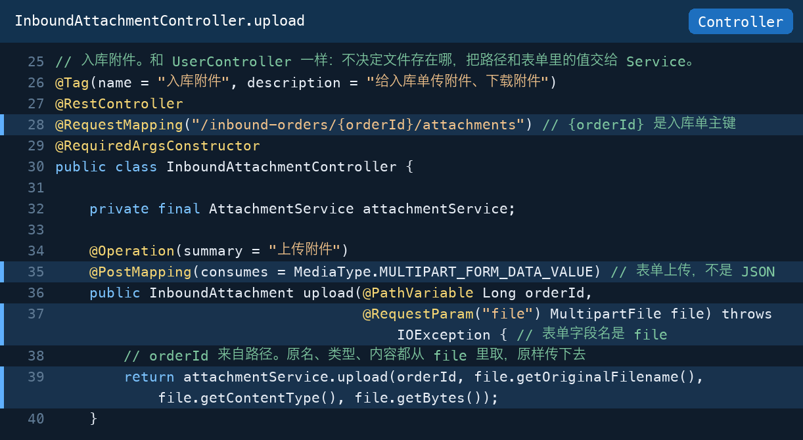
{orderId} 在前缀里。第 35 行 consumes = MULTIPART_FORM_DATA_VALUE：只收表单上传。第 37 行 @RequestParam("file") MultipartFile file 取表单里名叫 file 的字段。第 39 行把原名、类型、字节三样拆开传给 Service，Controller 不决定文件放在哪。Service
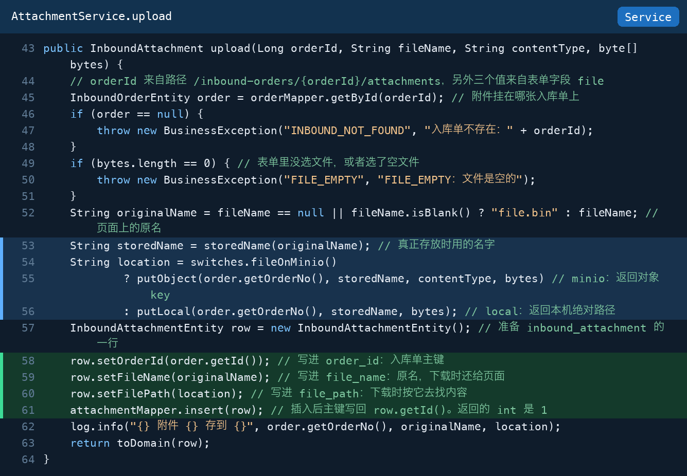
file.bin。第 53 行决定存放时叫什么。第 54–56 行按 file-store 决定放在哪，两条路都返回一个字符串：本机绝对路径，或对象 key。第 57–61 行把原名和这个字符串写进 inbound_attachment。第 62 行打一行日志，排错时能看到这次存到了哪。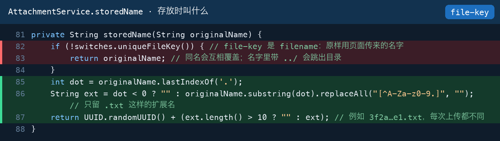
d1d07766-….txt。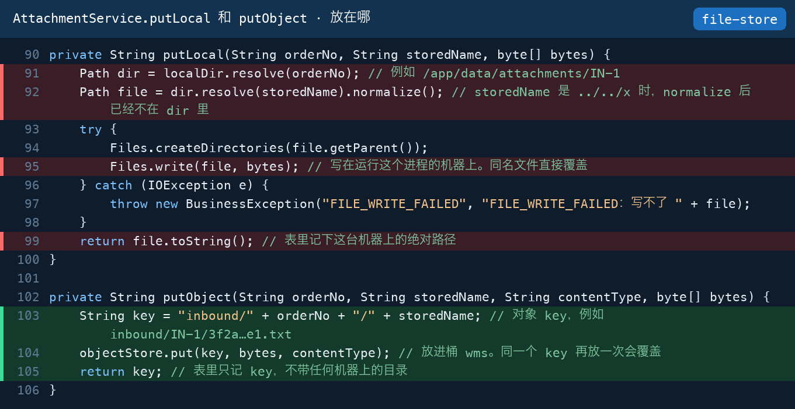
putLocal：第 91 行在附件根目录下按单号分目录，第 92 行拼出文件路径，第 95 行写进运行这个进程的机器的磁盘，第 99 行返回这台机器上的绝对路径。putObject：第 103 行拼出 key，第 104 行交给 ObjectStore，第 105 行返回 key。key 里没有任何机器上的目录。对象存储
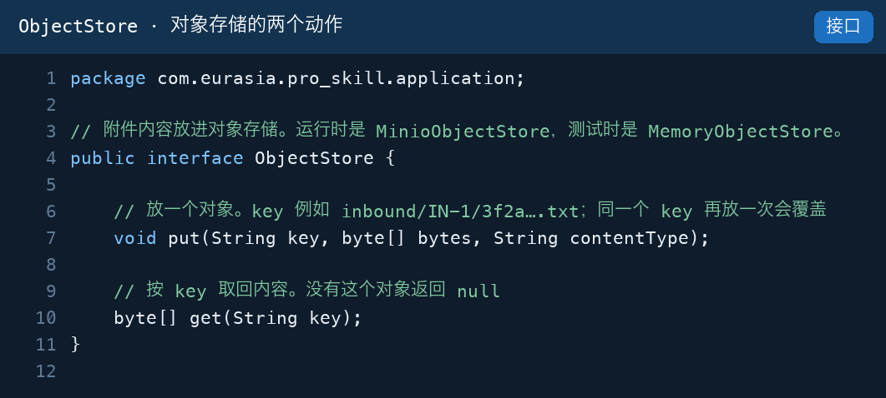
LessonRedis 一样，Service 只认这个接口：放一个对象、按 key 取回。运行时是 MinioObjectStore，测试时是 MemoryObjectStore，测试不用起 MinIO。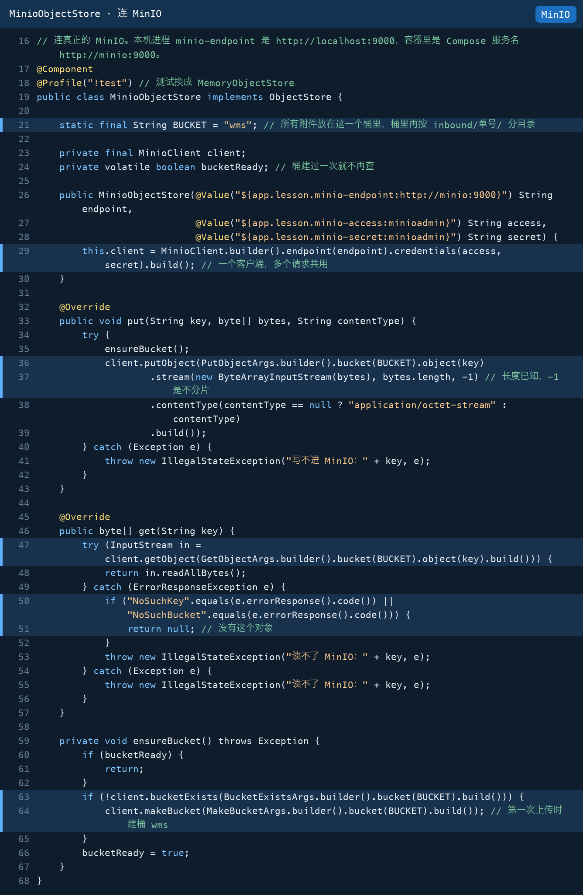
putObject：桶、key、字节、类型。第 47 行 getObject 按 key 取回。第 50–51 行：MinIO 说没有这个 key，就返回 null，交给 Service 报 FILE_NOT_FOUND。Mapper
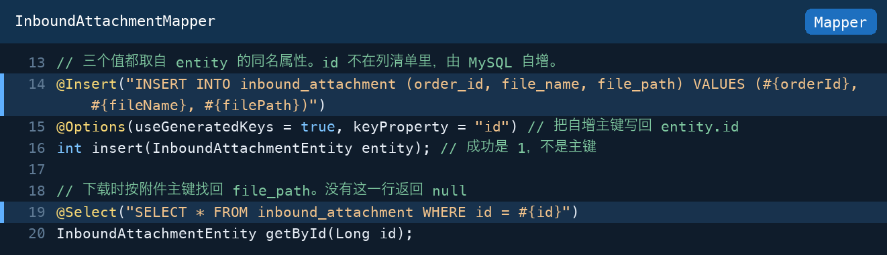
#{orderId}、#{fileName}、#{filePath} 取 entity 上的同名属性。第 15 行把自增主键写回 entity.id。第 19 行是下载时用的按主键查询。结果
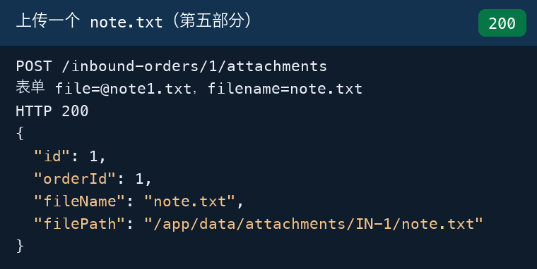
filePath。第四部分这里是 /app/data/attachments/IN-1/note.txt：应用跑在容器里，/app 是容器里的工作目录。6. 接口二：下载附件
GET /inbound-orders/1/attachments/1，没有请求体。
curl -i http://localhost:8080/inbound-orders/1/attachments/1 -H "Authorization: Bearer 你的token"
| 值 | 从哪来 | 经过 | 到哪 |
|---|---|---|---|
attachmentId | 路径 | getById 的 WHERE id = ? | 读出 file_name、file_path、order_id |
orderId | 路径 | 和表里的 order_id 比，不一样就当没有 | 挡住拿别的单的附件编号来下载 |
file_path | 表 | 绝对路径读磁盘，否则按 key 读 MinIO | 响应体 |
file_name | 表 | 按扩展名定 Content-Type，写进 Content-Disposition | 响应头 |
Controller
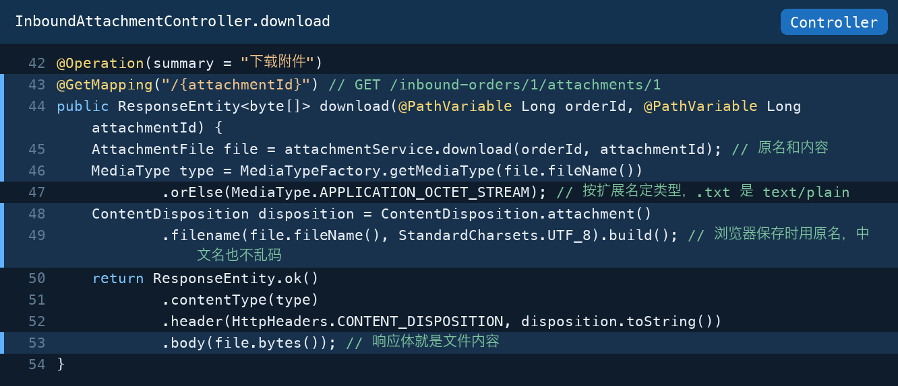
.txt 是 text/plain，.jpg 是 image/jpeg，认不出就当二进制。第 48–49 行 Content-Disposition: attachment：浏览器把它当下载，保存时用原名。第 53 行响应体就是文件的字节，不是 JSON。Service
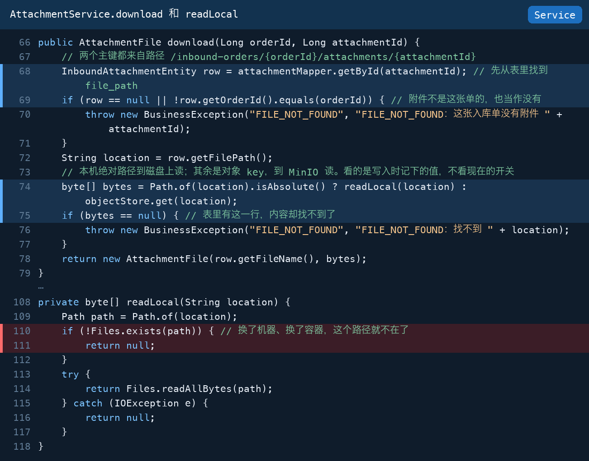
file_path 本身：绝对路径就读磁盘，否则当 key 去 MinIO 读。看的是写入时记下的值，所以开关从 local 改成 minio 以后，老附件仍按老路径读。第 75–77 行内容找不到，返回 FILE_NOT_FOUND。第 110–111 行：路径在这台机器上不存在就是 null。Mapper
第 5 节 Mapper 图第 19 行：SELECT * FROM inbound_attachment WHERE id = #{id}。
结果
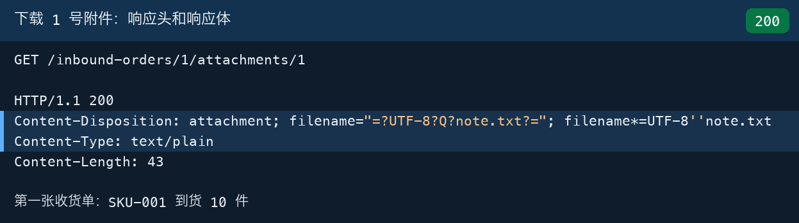
curl -i 会把响应头一起打出来。Content-Disposition 里有两个 filename：带 * 的是给中文名用的 UTF-8 写法，新浏览器都认它。响应体就是上传时的内容。7. 实验顺序
下面的结果都是按这个顺序在两个分支上各跑一遍得到的，应用跑在容器里。想让主键和图上一样，先在 Adminer 里清空：
TRUNCATE TABLE inbound_attachment; TRUNCATE TABLE inbound_order_line; TRUNCATE TABLE inbound_order;
准备两个文件：
echo '第一张收货单：SKU-001 到货 10 件' > note1.txt echo '第二张收货单：SKU-001 到货 5 件' > note2.txt
| 步 | 操作 | 第四部分 | 改良版 |
|---|---|---|---|
| 1 | POST /inbound-orders 建 IN-1；上传 file=@note1.txt;filename=note.txt；下载 1 号 | 两边一样：200，下载到第一张。差别在 filePath | |
| 2 | 再上传 file=@note2.txt;filename=note.txt；下载 1 号、2 号 | 两个都是第二张 | 1 号第一张，2 号第二张 |
| 3 | 上传 file=@note1.txt;filename=../../escape.txt | filePath 是 /app/data/escape.txt | filePath 还在 inbound/IN-1/ 下 |
| 4 | docker exec pro-skill-app ls -l /app/data | 有 attachments 目录和 escape.txt | 没有这个目录 |
| 5 | docker compose -f docker-compose.dev.yml up -d --force-recreate app，等容器 healthy；再下载 1 号、2 号 | 400 FILE_NOT_FOUND | 200，内容不变 |
第 5 步重建以后 token 仍然能用；返回 401 就重新登录一次。
8. 漏洞一：文件写在应用自己的磁盘上
漏洞是什么
file-store 是 local 时，文件写进运行这个进程的机器的磁盘，表里记下这台机器上的绝对路径。容器的磁盘是一次性的：docker compose up --build 发新版本、--force-recreate、容器挂了被重新拉起，旧容器连同里面写的文件一起删掉。部署到 Linux 上开两个应用实例时，A 写的文件在 B 上也没有。表里的路径还在，内容没了，用户点下载就是 404。
复现：实验顺序第 1、4、5 步
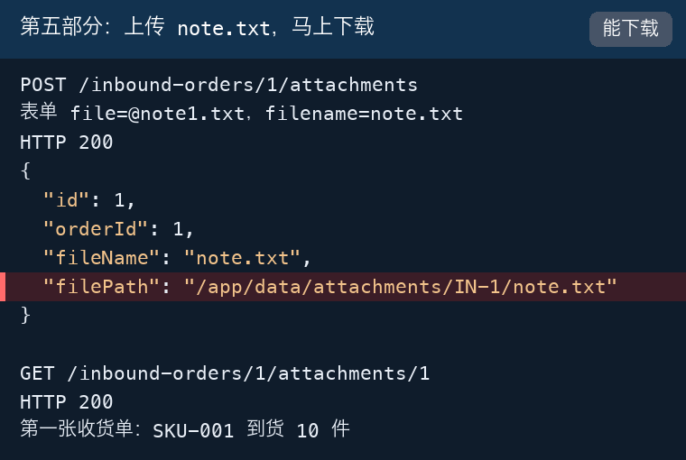
filePath 是 /app/data/attachments/IN-1/note.txt。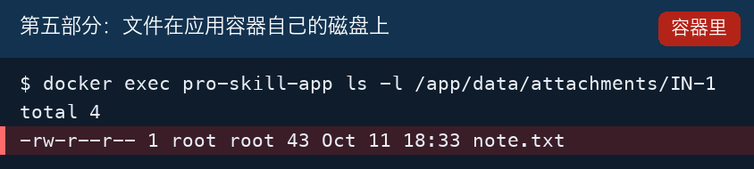
/app/data 下。本机项目目录里没有它。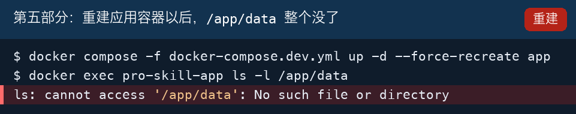
/app/data 整个不存在了。新容器是从镜像重新起的，镜像里只有 app.jar。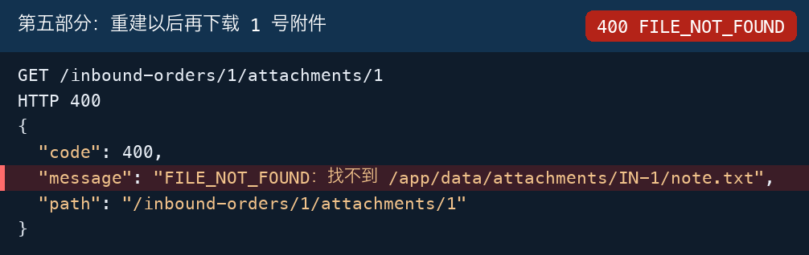
FILE_NOT_FOUND，消息里就是表里记的那条路径。去库里查
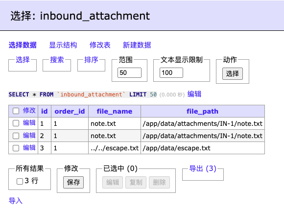
inbound_attachment：三行的 file_path 都是 /app/data/…。这个值只在那一个已经被删掉的容器里有意义。是哪一行代码
第 5 节 upload 第 56 行走 putLocal；putLocal 第 95 行写本机磁盘，第 99 行把本机绝对路径交回去写进表。
改良版怎么改：内容进 MinIO，表里只记 key
改良版把 file-store 设成 minio，第 55 行走 putObject：内容放进 MinIO 的桶 wms，表里只记 inbound/IN-1/… 这样的 key。MinIO 是单独的服务，数据在自己的数据卷里，应用容器怎么重建都不影响它；开几个应用实例，都连同一个 MinIO。
表里记 key 而不是 http://localhost:9000/wms/… 这样的完整地址：地址里的主机名本机和容器里不一样，换服务器又不一样。key 不带主机，连哪个 MinIO 由配置决定。
改完的结果
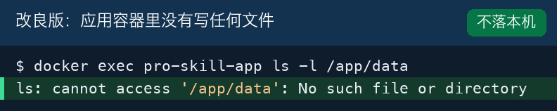
/app/data，什么也没写到本机。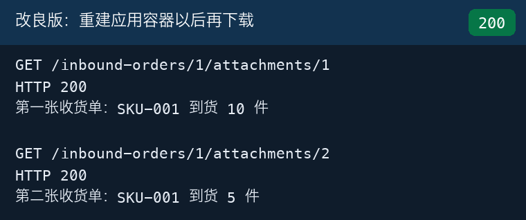
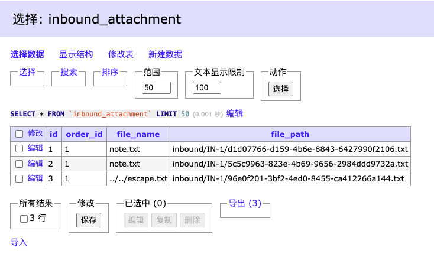
file_path 是 inbound/IN-1/随机串.txt，file_name 仍是页面上的原名。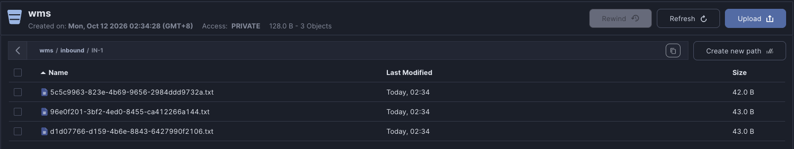
wms → inbound → IN-1：三个对象，名字和表里 file_path 的最后一段一一对应。9. 漏洞二：用页面传来的名字存放
漏洞是什么
文件名是用户给的，服务器不该拿它直接当存放的名字。file-key 是 filename 时有两个后果：
- 同名覆盖。手机拍的照片常常都叫
image.jpg，同一张单传两张，第二张写到同一个路径上，第一张就没了。表里两行记的是同一个路径，下载哪一个拿到的都是后传的那张。 - 跳出目录。文件名可以写成
../../escape.txt。拼路径时..表示上一级，文件就写到了附件目录外面。换成../../app.jar这样的名字，就能盖掉别的文件。
复现：实验顺序第 2、3、4 步
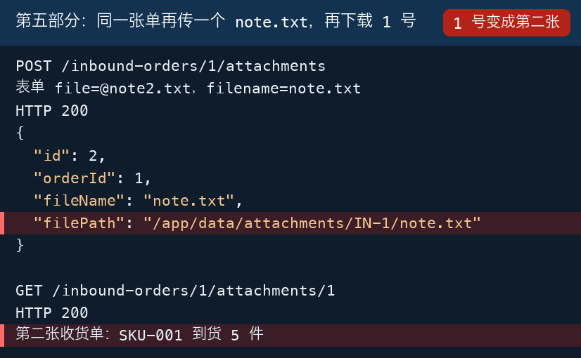
filePath 和第一个一样。再下载 1 号，拿到的是第二张收货单。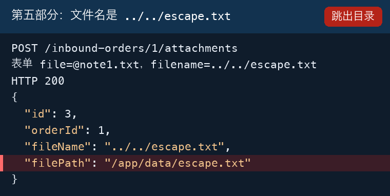
../../escape.txt，filePath 是 /app/data/escape.txt，已经不在 /app/data/attachments/IN-1 里。去容器和日志里查
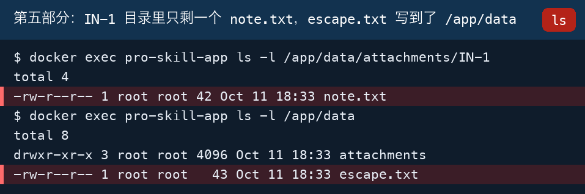
IN-1 目录里只有一个 note.txt，大小 42 字节，是第二张。escape.txt 出现在 /app/data 下，和 attachments 并列。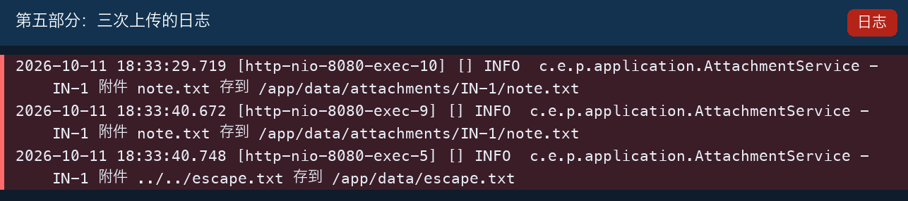
docker logs pro-skill-app 里第 62 行打的日志：前两次存到同一个路径，第三次存到了 /app/data/escape.txt。表里的情况见上一节 Adminer 图：1、2 两行 file_path 相同。
是哪一行代码
第 5 节 storedName 第 83 行原样返回原名；putLocal 第 92 行把它拼到目录后面，normalize() 把 .. 算掉以后，路径已经在目录外面。走 MinIO 也一样会同名覆盖：第 103 行的 key 也是用这个名字拼的。
改良版怎么改：存放名由服务器起
改良版把 file-key 设成 unique，走第 85–87 行：只从原名里取扩展名，并且只留字母、数字和点，前面换成随机串。每次上传的存放名都不同，同名不会覆盖；名字里的 / 和 .. 进不了存放名，跳不出目录。原名照样写进 file_name，下载时由 Content-Disposition 还给浏览器，用户看到的还是 note.txt。
改完的结果
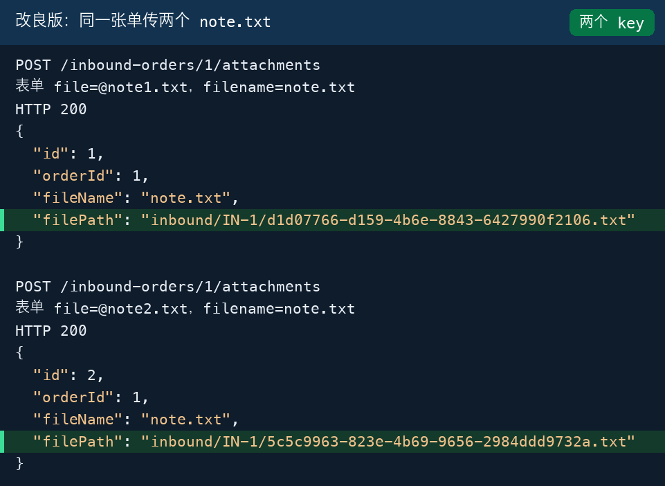
filePath 不同，fileName 都是 note.txt。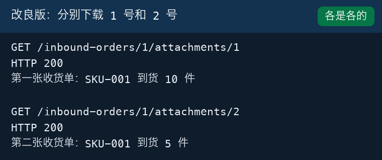
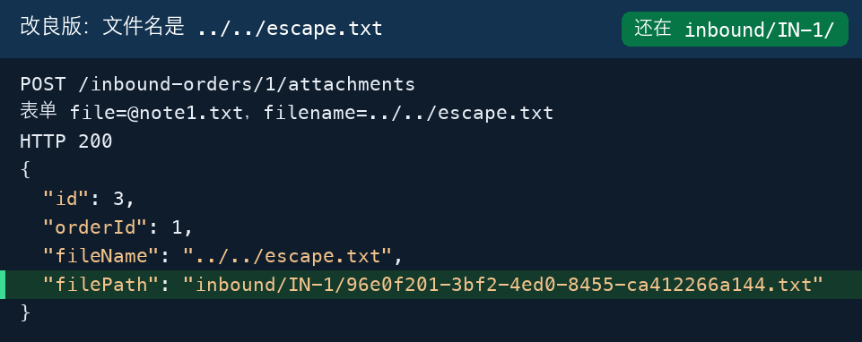
../../escape.txt，存放的 key 是 inbound/IN-1/随机串.txt。10. 改良版改了哪两块
两个分支的 Java 代码相同。改良版改的是 application.yaml 和 docker-compose.dev.yml 里两个开关的默认值（第 4 节的差别图）。
| 开关 | 第四部分 | 改良版 | 改良版走的代码 | 同一操作的结果 |
|---|---|---|---|---|
file-store | local | minio | AttachmentService 第 55 行、第 102–106 行：内容进 MinIO，表里记 key | 重建应用容器后下载：FILE_NOT_FOUND 变成 200 |
file-key | filename | unique | 第 85–87 行：随机名 + 扩展名 | 同名上传：互相覆盖变成各是各的；../ 跳出目录变成留在 inbound/单号/ |
上传一个文件马上下载、下载时的文件名和类型、附件不属于这张单时报错，两个分支结果相同。
11. 用测试把两条路径跑一遍
两个测试类把开关写死。测试用 MemoryObjectStore 代替 MinIO；「换一台机器」用删掉本机附件目录来模拟：
| 测试类 | 开关 | 断言 |
|---|---|---|
AttachmentDefectPathTest | local、filename | 表里是绝对路径，删掉目录后下载 400；同名两次路径相同，1 号下载到第二张；../../escape.txt 写到了附件目录外面 |
AttachmentFixedPathTest | minio、unique | 表里是 inbound/IN-n/uuid.txt，删掉目录后照样下载；同名两次各是各的，下载名仍是 note.txt；../ 留在 inbound/IN- 下；附件不属于路径上的单时 400 |
./mvnw test -Dtest='Attachment*PathTest'
12. 把改良版合并进第四部分
仓库地址仍是 https://gitee.com/dingsaier/warehouse-backend.git。源分支是 第四部分改良版，目标分支是 第四部分。讲义两边是同一份，合并带过去的是第 4 节差别图里的开关值。操作和第一部分最后一节相同，教师做，全班看，只合并这一次。
- GitHub Desktop 里点 Fetch origin，Current Branch 选「第四部分改良版」。
- 上方是 Push origin 时点它，把改良版送到 Gitee。
- 浏览器打开仓库，「Pull Requests」→「新建 Pull Request」，源分支
第四部分改良版，目标分支第四部分，标题「合入第四部分改良版」，点「创建」。文件列表里能看到application.yaml和docker-compose.dev.yml。 - 在这个 Pull Request 页面点「合并」并确认。
- GitHub Desktop 切回「第四部分」，点 Pull origin。
application.yaml 第 100–101 行变成 minio、unique。执行 docker compose -f docker-compose.dev.yml up -d app 让应用容器带着新值重建，按实验顺序再跑一遍，结果和这份讲义里的改良版一致。13. 作业里要写同类接口时
把下面这段发给 DeepSeek 或 Kimi。生成后按第 5–6 节检查：表里存的是不是 key 而不是本机路径或带主机的地址；存放名是不是服务器起的；下载时有没有核对附件属于路径上的那张单；有没有把原名放回 Content-Disposition。
这是 Spring Boot 项目，包名 com.eurasia.pro_skill，MyBatis 注解写 SQL，对象存储用 MinIO Java SDK 8.5。
请按 UserController 的方式写入库单附件：Controller 只取路径变量和表单里的 MultipartFile，
把原名、类型、字节一个个传给 Service，不要用 builder。
1. POST /inbound-orders/{orderId}/attachments，表单字段 file：
- 存放名由服务器生成：UUID + 原名的扩展名（扩展名只留字母、数字和点）
- key 是 inbound/{入库单号}/{存放名}，放进桶 wms，桶不存在就建
- inbound_attachment 插入 order_id、file_name（原名）、file_path（key）
2. GET /inbound-orders/{orderId}/attachments/{attachmentId}：
- 附件不存在或不属于这张单，返回 FILE_NOT_FOUND
- 按 key 从 MinIO 读，Content-Type 按扩展名，Content-Disposition 用原名（UTF-8）
3. MinIO 地址、账号、密码从配置读，本机 http://localhost:9000，容器里 http://minio:9000。
每一行代码加注释：这个值从哪来、写到哪一列或哪个 key、返回的是什么。
生成后说明：为什么表里不存本机路径，为什么不用页面传来的文件名当 key。